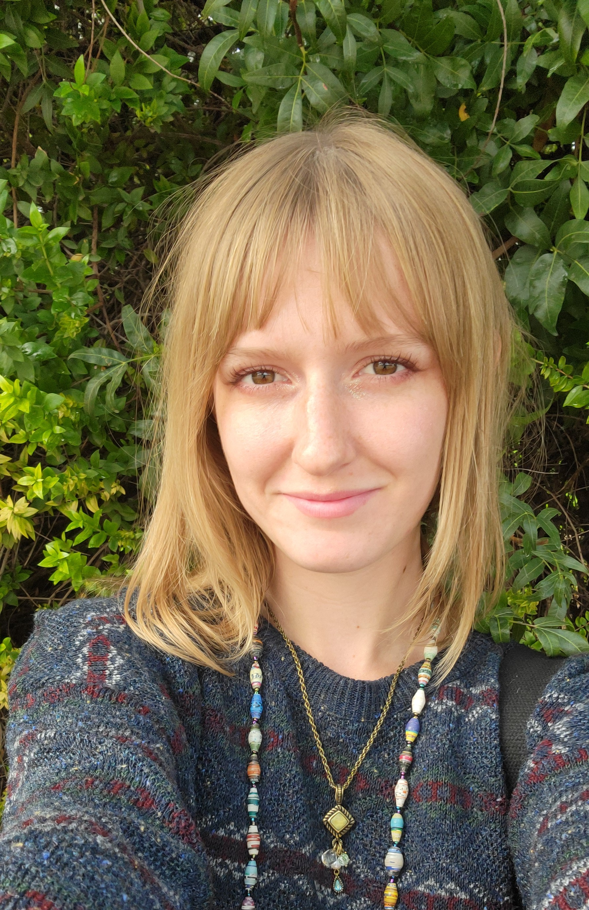

The Artist
I am an artist and web developer with a passion for multi-media projects. While I have been drawing and crafting since youth, I love to explore the interaction between traditional design and the digital. Since college, wesites, game development, and electronic art pieces have become my neiche.
A lot of my inspiration comes from my desire to understand and learn every media form possible. I thrive on the challenge of doing something new, and this has led to the experimenting of metal sculpture, sewing, coding, wood building, soft electronics, ceramics and more. I am always looking to push the boundaries between traditional and digital art, so if someone has a project but isn't sure how to impliment it, I'm the one to help!
I am always open to working with other creators or organizations on long or short term projects, and I will always be willing to learn a new program to meet project needs. I have some experience in event planning, interactive experiences, and environmental design, and anything functional and accessible.